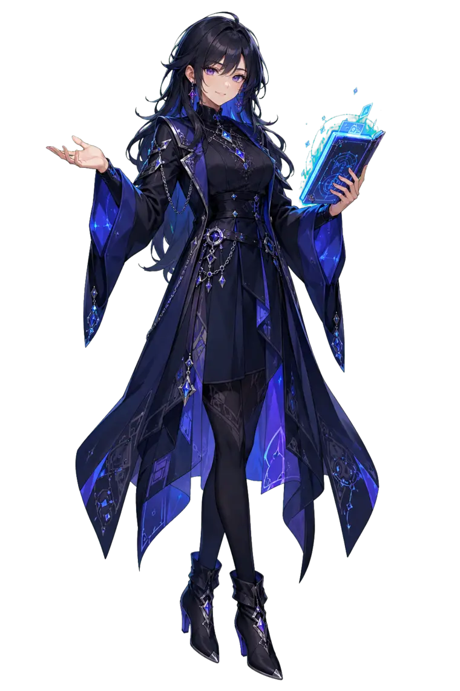

Kaldığın yerden devam edildi
00:00 / 00:00
Derslerin yükleniyor…
Arama veya filtreleri temizleyip tekrar dene.
Tara, kuyruğu yönet ve hatalı dersleri yeniden dene.

Kaldığın derslere dön veya tamamladıklarını yeniden izle.
Bir ders açtığında ilerlemen burada görünecek.
İndirdiğin dersi yazıya çevir, ardından çoktan seçmeli testle kendini ölç. Bu özellik hâlâ geliştiriliyor; sonuçlar zaman zaman eksik veya hatalı olabilir.
“Transkript oluştur” dediğinde konuşmalar cihazında yazıya çevrilir.
Her cevaptan sonra doğru seçenek ve kısa açıklama gösterilir.
EchoWraith’in yaptığı her aşama, denediği otomatik çözümler ve hata nedenleri burada görünür.
Şefim, ders arşivinin sana ihtiyacı var. Aşağıdaki dört adımı sırayla uygula; geri kalanını EchoWraith halleder.
Alt çubukta oynat/duraklat, 10 sn geri-ileri, ses, oynatma hızı ve yer imi (not) bulunur. Sağ taraftaki panelden sohbeti okuyabilir, kendi notlarını ekleyebilir ve öğretmen kamerasını küçültüp büyütebilirsin. Bir sohbet mesajına dokununca video o ana atlar.
Alt çubuktaki Odak Modu düğmesi menüleri ve sohbeti gizleyip yalnızca ders videosunu ekranı kaplayacak şekilde büyütür; öğretmen kamerası küçük bir köşe penceresi olarak açık kalır. Çıkmak için düğmeye yeniden dokun ya da klavyeden Esc’e bas. Yanındaki düğme ise tam ekran açar.
Nerede bıraktığın otomatik kaydedilir. Kütüphanenin üstündeki “Kaldığın yerden” kartından veya soldaki “İzleme Geçmişi” bölümünden tek dokunuşla devam edebilirsin.
“Transkript & Test” bölümünde indirdiğin bir dersi yazıya çevirip kendine çoktan seçmeli test çıkarabilirsin; her şey bu bilgisayarda çalışır, internete yüklenmez. Bu özellik hâlâ geliştiriliyor (deneysel), bu yüzden sonuçlar zaman zaman eksik veya hatalı olabilir.
Önce bekle: EchoWraith bağlantı, oturum, tarayıcı, indirme ve video onarım yöntemlerini otomatik dener. Çözemezse Tanılama’dan destek paketini indirip paylaşabilirsin.
Kütüphanede dersleri seçip “Seçilenleri sil” düğmesine bas. Onay vermeden hiçbir dosya silinmez.